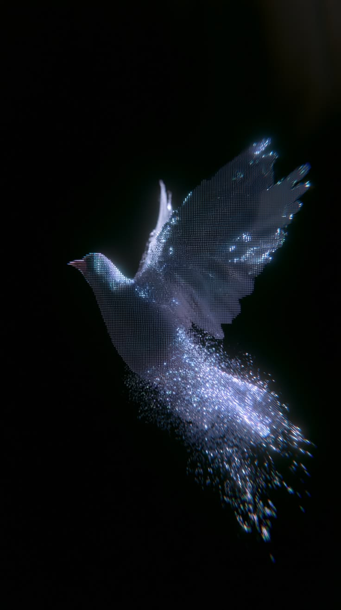

Biological time · one organism
Rhythms remain.
Alignment changes.
Four genes are always visible. Read each spoke independently; compare the same gene across time, tissue, and condition.
Underlying experiment:
Zebra finch — Taeniopygia guttata

ZT13 · measured
Hypothalamus · central clock
Four independent gene spokes · prepared 0–1 scale
Liver · peripheral clock
Same genes, same order · prepared 0–1 scale
Cage activity
Minute-level movement · hops per minute
Cage mean, not a single bird's movement.
Whole-body melatonin field
Prepared 0–1 analysis scale
Raw source unit was not stated.
Brain ↔ liver difference
Absolute descriptive gap · not correlation
ZT13 · measured molecular marker
Filled symbols show values observed at this sampling time.
Filled symbols show values observed at this sampling time.